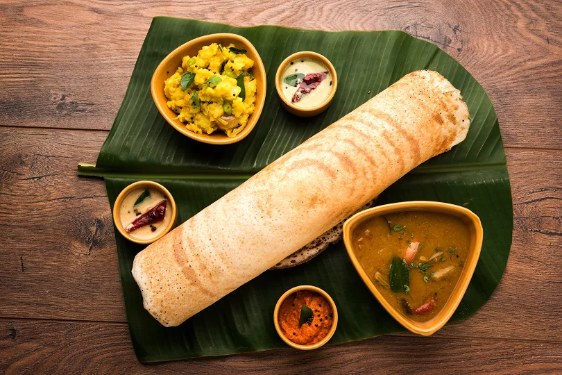

A restaurant of the Fort House Hotel, this water-bound restaurant is one of its kind. Although they specialize in seafood, you’ll also find traditional vegetarian and European cuisine like pizzas and pasta here.Options include breakfast/brunch, lunch, dinner and after-hours. Try their delicious squid dishes, calamari, fish curry and prawns – they’re all worth dying for. Their chicken, pork and beef dishes are also top notch – so meat lovers won’t be disappointed with this place either.With envious greenery and serene blue sea to give you company, you’ll find your experience here quite fulfilling.
East meets West – there’s no better way to round of your experience here, than Dosas & Pancakes. These people really take traditional to a whole new level – and that too at a reasonable price. With a wide variety of dosas in their menu, you can enjoy some really interesting culinary twists – chicken dosa wrap, beef masala dosa wrap and dosa with egg layered. And of course, they have some of the best pancakes in the whole of Kerala. You can also enjoy sandwiches, cakes and brownies here.On Sundays, you can expect an elaborate affair as they serve special dishes to please your appetite. With a chic coastal ambience and amazing food, you’ll find all your senses catered to.

Although slightly heavy on the pocket, this place is worth every penny. Overlooking the Arabian Sea on the West and the backwaters on the East, Bait truly hooks you with its tasteful ambience, natural setting and lip-smacking food.With the beauty and tranquillity of nature enveloping you, dive in to gorge on some of the most mouth-watering seafood ever served on the plate. You can dine on the deck or relax on loungers, sun deck beds or just enjoy a drink on the all beverage interactive bar.
If you want authentic North Indian cuisine in Kerala, then drop in to this cosy place. Aptly named, Dal Roti is a simple fare, reasonably priced, reposing on the quaint streets of Fort Kochi. The owner of this food-joint – a simple man – Mr. Ramesh will tuck you right in with his warm smile. The menu sports an extensive range of vegetarian as well as non-vegetarian cuisine.Although the ambience is not so well thought out, you’ll still fall in love with this place for its simplicity and rustic charm. It is best known for its yummy chicken kathi roll – you’ll hear raving reviews about it the moment you step in Fort Kochi.
Once an old dilapidated godown, the restored Pepper House is now a well-known art centre. It was one of the main venues for the Kochi Muziris Biennale. The café is one of the best you’ll find in Kerala. If you want a quick bite in the evening or a light breakfast, then drop in to this place. With the place hosting many art exhibitions, you can expect to mingle with an intellectual crowd here.Add to it the wonderful quaint atmosphere and the charm that an old building exudes, and you’ll find your experience here worth sharing. With a predominantly European fare, Pepper House Cafe is a welcome change if you get tired of the traditional Malayali cuisine on your stay here.
If you are a hard-core non-vegetarian who looks down on veggie lovers, then this place will definitely change your mind. Saravana Bhavan is a renowned restaurant found all over the world – from Canada, Singapore, UK, Qatar, US and countless outlets in India itself, this food joint is going places despite serving only vegetarian. In Munnar, this outlet is a welcome sign for hungry travellers. The food here is served on traditional banana leaves, so you can expect some authentic Malayalam food here. Try their parottas, thalis, curd rice, dosas and uttapams.Aren’t you feeling hungry after reading about these amazing restaurants? Fix your travel plan, make a booking, pack your bags and travel to Kerala to satisfy your appetite for the wholesome South Indian cuisine!